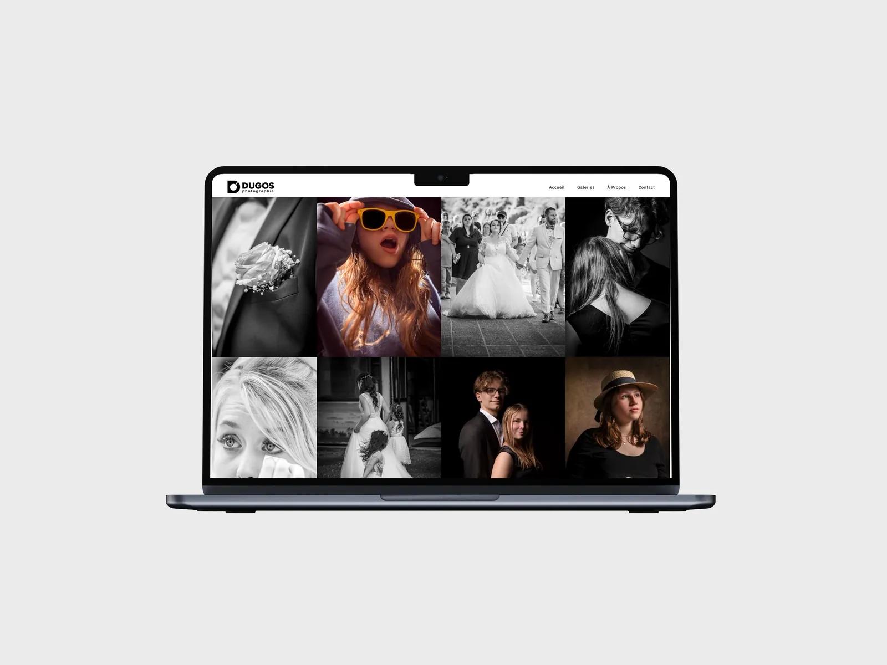

Dugos Photographie
Site vitrine pour Dugos Photographie, photographe de mariage et de portrait à Marmande.
Voir le siteLe projet
Laurent photographie des mariages et des portraits à Marmande. Son site devait montrer son travail, rassurer les futurs clients et leur donner envie d'écrire. L'accueil est une mosaïque d'images, surtout en noir et blanc, avec une typographie à empattements et une interface qui reste discrète. Les avis Google sont sur la page, et le formulaire demande le type de prestation : Laurent sait de quoi on parle dès le premier message.